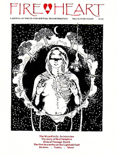

«История настоящих вампиров» она же «Огненное сердце» by Inanna Arthen (Vyrdolak) © 1988

«Настоящие вампиры» — чем еще это может быть, как не противоречием в терминах? Мы все знаем о вампирах. Стандартные герои художественной литературы, гарантированные кассовые сборы, медиа-вампир знаком нам с детства. Вообще говоря, наш кровосос проявляется с языком, плотно прижатым к зубастой щеке от Белы Лугоши, изображавшего его в 1950-х годах, до подростковых фильмов о вампирах прошлого лета и хлопьев для завтрака графа Чокулы, СМИ редко рассматривают вампиров как действительно устрашающих. Стереотипные черты вампиризма знакомы любому ребенку: у вампиров большие клыки, они спят в гробах, мгновенно испепеляются солнечным светом, и их лучше всего уничтожать колом в сердце. Но самый главный «факт», который мы все конечно знаем, заключается в том, что таких вещей не существует.
Конечно, с точки зрения мифических, литературных и кинематографических условностей мы правы: нет никаких «легионов нежити», преследующих неосторожных. Мы объяснили фольклор политикой, непонятыми болезнями и истерией, а литературные и кинематографические образы психологией, историей и социологией. Мы, жители 20-го века, уверены, что вампиры не могли существовать на самом деле. Но ведь большинству из нас и никогда не приходится думать иначе. Для многих людей концепция вампиров становится критической и часто беспокоящей всю жизнь. Жить, любить или дружить с настоящим вампиром — значит столкнуться с рядом проблем, которые могут потребовать расширения границ принятой реальности. Смириться с тем, что вы являетесь настоящим вампиром, — значит столкнуться с кармическим испытанием всей жизни.
Некоторые из тех, кто читает эту статью, уже знают это. Остальные, вероятно, думают: «Настоящие вампиры, дайте мне передохнуть! Конечно, есть довольно странные люди, но все, что им нужно, — это хороший терапевт». Да, есть люди, которые принимают на себя все атрибуты готического романа: одеваются в черное, претендуют или притворяются «вампирами» в сверхъестественном смысле, носят накидки, спят в ящиках и даже носят накладные клыки. Есть и более пугающие люди, которые стремятся пытать или убивать животных или людей, чтобы получить власть, эмоциональное освобождение или сексуальное возбуждение, и которые иногда называют себя (или их называют) «вампирами». Но большинство из этих людей — проблемные люди, которых привлекают культурные мифы о вампирах: сверхъестественные способности (потому что они чувствуют себя бессильными), подавляющая сексуальность (потому что у большинства из них есть сексуальные проблемы и нет настоящих отношений), бессмертие (потому что они боятся старения и смерти). Подобные люди являются последним «объяснением» стойкой веры человечества в вампиров. Но за всем фольклором, психологическими теориями, ролевыми играми и даже традиционными духовными предположениями скрывается настоящая правда о вампирах.
Область вампирологии сложна и загадочна. Феномен вампиров имеет множество аспектов, и для их полного изучения потребуется несколько книг. Один из аспектов вампиризма, который часто беспокоит магические, спиритические и другие небольшие группы, — наиболее распространенная форма вампиризма — встречается среди живых людей, которые разделяют с нами преимущества и недостатки физического существования на этом плане, но не вполне являются людьми. Эти люди на первый взгляд кажутся несколько эксцентричными членами общества, однако их внешние особенности лишь намекают на то, насколько они отличаются от окружающих.
Каждый из нас на всю жизнь воплощается с определенным способом взаимодействия с физическим миром через наше физическое тело. Вампир – это человек, рожденный с необычайной способностью поглощать, направлять, трансформировать и манипулировать «пранической энергией» или жизненной силой. У нее также есть критический энергетический дисбаланс, который резко меняется от дефицита до перегрузки и обратно. Эта способность управлять энергией является даром, но постоянный дисбаланс ее собственной системы является причиной негативных моделей поведения и характеристик, которые могут быть заметны у вампирической личности.
Настоящие вампиры не обязательно пьют кровь — на самом деле, большинство из них этого не делают. Питье крови и вампиризм путают до такой степени, что для обычного человека вампир определяется как нечто, пьющее кровь (например, «летучая мышь-вампир»). Но когда мы смотрим за пределы случайных предположений и обращаемся к деталям общих убеждений, мы обнаруживаем нечто совершенно иное. И в фольклоре, и в литературе присутствует понимание того, что вампирам нужна энергия или жизненная сила. Многие старые народные сказки признают, что вампиры сосут кровь, но никогда не описывают, как это происходит на самом деле. Жертвы медленно приходят в упадок и чахнут, а выжившие предполагают, что какой-то злой демон высасывает из них кровь. Они знают, что Библия говорит: «Кровь — это жизнь», и любой, кто терял свою жизненную силу, должно быть, теряет кровь. Однако во многих случаях «атака» вампира даже не предполагает физического контакта. В других случаях явно происходит обмен сексуальной энергией.
Свежая кровь является самым сильным известным источником пранической энергии (жизненной силы). На протяжении всей истории люди практиковали питье крови по многим причинам, но употребление крови само по себе не указывает на то, что человек является вампиром. Только настоящие вампиры могут напрямую поглощать праническую энергию из свежей крови, и по этой причине некоторых настоящих вампиров привлекает кровь, и они находят разные способы ее получения.
Однако лишь редкий вампир не может поглощать энергию гораздо более тонкими способами. Это механизм, который заставляет настоящих вампиров причинять вред другим и себе, если они не способны осознать происходящее и провести сознательную работу по преобразованию своей внутренней природы. Вероятность того, что вампиры будут злыми или духовно осведомленными, не выше, чем у населения в целом, но, не осознавая этого, они могут провести свою жизнь, делая себя и других несчастными, и будут продолжать воплощаться в этом образе, пока не предпримут действия, чтобы изменить его.
Существует ряд внешних симптомов вампиризма, но важно осознавать, что некоторые из них встречаются и в обычном человеческом поведении. Настоящих вампиров можно идентифицировать отчасти потому, что у них есть большинство симптомов, а не один или два. Но что еще более важно, настоящие вампиры отличаются определенным качеством энергии. Хотя любой, кто читает описание симптомов и моделей поведения, может найти некоторые из них, которые применимы к его знакомым или даже к нему самому, но настоящие вампиры умеют ярко выделяться среди всех, кто с ними общается. Мало найдется людей, не знакомых хотя бы с одним вампиром.
Физически вампиры обычно являются «ночными людьми» на биохимическом уровне. У них инвертированные циркадные ритмы: такие циклы тела, как пики температуры, начало менструаций и выработка гормонов сна в мозгу, происходят в противоположное от большинства людей время суток. Им трудно приспособиться к дневному графику, и они часто работают по ночам. Они, как правило, светочувствительны, избегают солнечного света, легко загорают и обладают отличным ночным зрением. Их жизненная сила варьируется в широком диапазоне: в один день они могут быть энергичными и активными, а в другой — депрессивными и вялыми.
У них часто возникают проблемы с пищеварением. Даже у людей с железным желудком возникает множество проблем с едой, коренящихся в их постоянном голоде по энергии. Вопреки представлению о вампирах как о худых, многие настоящие вампиры страдают от ожирения из-за голода, который делает их зависимыми от еды, и системы, которая медленно перерабатывает физическую пищу. Иногда их беспокоит зависимость от других веществ по тем же причинам, но поскольку их системы больше настроены на праническую энергию, чем на переработку физической субстанции, они могут быть не так чувствительны к медикаментам и алкоголю, как обычный человек.
Эмоционально и физически вампиры непредсказуемы, капризны, темпераментны и вспыльчивы. Основная отличительная черта настоящих вампиров от обычных людей, обладающих этими качествами, — это экспрессивность вампира. Вампиры — чрезвычайно экспрессивные люди. Им часто дают такие прозвища, как «черная дыра». Когда другие говорят о них (обычно для того, чтобы пожаловаться), вампиров часто описывают такими терминами, как «нуждающиеся», «ищущие внимания», «рисующиеся», «манипулятивные», «выматывающие», «истощающие», «монополизирующие разговор», «ревнивые», «с огромным эго» и так далее. Эмоции вампира глубоки, пылки и сильны, и он обычно демонстрирует большие экстрасенсорные способности и испытывает неконтролируемые магические и психические переживания. Вампиры также являются эмпатами, и, хотя они и не осознают своей природы, они часто являются «психическими губками», которые просто впитывают вибрации отовсюду, что приводит к ожидаемой эмоциональной нестабильности.
«Голодный» вампир — тот, чей энергетический уровень несбалансирован в сторону дефицита — становится непроизвольным психическим вихрем, притягивающим к себе всю праническую энергию в этой области. Когда энергия не поступает достаточно быстро (а для вампиров типично, что энергия никогда не течет для них достаточно быстро), он начнет проявлять модели поведения, чтобы увеличить количество сознательного внимания, которое получает от других. По этой причине у некоторых вампиров развивается привычка агрессивно-конфронтационного поведения или постоянной враждебности к людям, с которыми они состоят в отношениях. Почти все вампиры, какие бы уловки они ни использовали, обладают талантом привлекать (или отвлекать) внимание всех присутствующих.
Как только у вампира возникает переизбыток энергии, он меняет свою модель поведения. Он может стать угрюмым, молчаливым, замкнутым и интровертным. Некоторые вампиры становятся маниакально веселыми, когда они сыты, но даже их хорошее настроение, кажется, раздражает других, и для вампиров более характерно быть печально известными как зануды. Фазы «голода» и «перегрузки» могут возникать в течение нескольких минут или длиться несколько дней. Вампиры обычно одиночки, отчасти потому, что они сильно отличаются от окружающих, но также и потому, что у них есть потребность контролировать степень своего контакта с источниками энергии.
Настоящие вампиры не являются демоническими извергами христианизированного фольклора, но пока они отказываются принять свою внутреннюю природу, их плохая репутация вполне заслужена. Бессознательные вампиры имеют тенденцию достигать взрослой жизни с уровнем социальных навыков и общей искусности ниже среднего, а также склонны быть эгоистичными и эгоцентричными. Требования собственных энергетических систем настолько отвлекают их, что им трудно обращать внимание на потребности других. Их отношения имеют тенденцию быть катастрофой. Разные вампиры развивают разные модели поведения в зависимости от того, что лучше всего подходит им в их жизненной ситуации, но некоторые модели являются общими. Вампир «роковая женщина» или «сердцеед» образует непрерывную серию сексуальных связей с одним партнером за раз, отбрасывая каждого несчастного любовника, когда тот становится слишком истощенным (или начинает защищаться), чтобы поддерживать энергетические потребности вампира. Другие вампиры образуют долгосрочные отношения с одним человеком, либо вампиром, чей энергетический цикл дополняет их собственный, либо с человеком, который получает удовлетворение от роли психического слуги или страдальца. Распространенной закономерностью, особенно среди молодых людей, является постоянное присоединение к социальным, религиозным, политическим и магическим группам пока не разрушат их, либо не будут изгнаны. Вампиры могут использовать соседей по комнате, домашнюю обстановку, магические группы, работу и любовников, как, например, бумажные салфетки.
Многие люди чувствуют себя «жутко» или «странно» рядом с вампирами. Обычно это происходит из-за того, что их собственная жизненная сила притягивается к вихрю вампира. Большинство людей чувствуют себя некомфортно и отвлекаются, когда их энергия вытягивается. В дополнение к этому, частым результатом такого оттока является плотное прилегание ауры к телу, что вызывает ощущение покалывания на коже — «мурашки по коже».
Вампиры не чаще оказываются психопатами или убийцами, чем любой случайный человек на улице. Однако длительные или очень сложные отношения с вампиром могут вызвать серьезную нагрузку на эмоциональную и энергетическую систему обычного человека. Фольклор предполагает, что жертвы вампира сами становятся вампирами. В действительности люди, которые были серьёзно «истощены» — то есть, у которых собственная энергия выведена из равновесия в дефицит — также становятся психическими воронками, которые оттягивают жизненную силу от других живых существ. Однако они никогда не бывают такими сильными, как настоящие вампиры, и, в отличие от них, быстро восстанавливаются и стабилизируются. Настоящие вампиры рождаются такими, какие они есть — никого нельзя «превратить в вампира». Однако годы истощения энергии могут привести к проблемам со здоровьем, начиная от депрессии и недомогания и заканчивая подавлением иммунной системы и предрасположенностью к серьезным заболеваниям. Большинство людей разорвут отношения прежде, чем они зайдут так далеко.
Многих вампиров привлекают магические пути. В магической рабочей группе их способность сеять хаос увеличивается из-за существующей там психической открытости и доверия. Но может быть и польза. Некоторые вампиры осознают свою истинную природу и решают предпринять серьезную работу по изменению себя. Как только они начнут это делать, они станут более приемлемыми партнерами и товарищами по работе. Получив контроль над своей способностью управлять энергией, они становятся выдающимися магами и целителями. Их способность удерживать внимание других дает им потенциал стать прекрасными лидерами и учителями. В конечном счете, цель вампиров – не заразить вселенную, а способствовать ее исцелению. Вампиризм — это темная, или несфокусированная сторона определенного вида экстрасенсорных способностей, развивающаяся на протяжении многих жизней. Она разрушительна только тогда, когда вампир либо отказывается взглянуть правде в глаза о себе и работать со своими способностями, либо когда он решает сыграть зловещую роль из-за иллюзии силы, которую она ему дает.
Из-за этого многие из описанных выше вампирских характеристик гораздо менее очевидны у самых сильных вампиров, тех, кто проделал значительную работу над своим внутренним «я». Многие из них уравновешенные, приятные, компетентные люди, обладающие огромной персональной силой. Они смирились с тем, кто и что они есть, и больше не проявляют негативных качеств, связанных с «психическим вампиризмом». К сожалению, бессознательные вампиры встречаются гораздо чаще, чем осознанные, и именно эти обеспокоенные души чаще появляются в магических группах.
Не существует «общего совета», который можно было бы дать тем, кто считает, что имеет дело с настоящим вампиром. Те, кто склонен к этому, могут попытаться помочь другу или коллеге по группе изучить свою внутреннюю природу и смириться со своим деструктивным поведением. Те, кто чувствует себя жертвой, могут решить прекратить отношения. Каждый случай индивидуален и может рассматриваться только заинтересованными лицами. Но каждому, кто занимается магической или экстрасенсорной работой, важно понимать, что вампиры — это реальный феномен и что, как и все опасности, их не следует встречать со страхом или гневом. Ничто не является злом по своей природе — только по выбору. Ужас открытия (за которым следуют насмешки или неприятие) тормозит саморазвитие многих настоящих вампиров. Когда они обращаются к дружелюбию, они часто обращаются за помощью.
Личности, которая верит, что она сама может быть настоящим вампиром, предстоит долгий и трудный процесс. Самый важный шаг на ее пути – это полное осознание себя: своих взаимоотношений, моделей поведения, энергетических уровней и всех других личностных качеств. Самую сложную работу часто можно изложить в самых простых терминах. Знания, осведомленность и контроль — это уроки, которые настоящие вампиры должны усвоить, чтобы использовать свои способности. Если настоящие вампиры не являются вымышленными бессмертными, они могут быть уверены, по крайней мере, в одном: к лучшему или к худшему, они сохранят качества, которые развили, на многие будущие жизни.
(Автор приветствует расспросы от читателей, лично интересующихся темой вампиризма. С ней можно связаться по адресу vyrdolak@bylightunseen.net. Читатели, желающие получить дополнительную информацию о вампирских знаниях в целом, могут обратиться к Библиографии).
ПРИМЕЧАНИЯ
Подробное исследование традиционного вампирского фольклора можно найти в работах Монтегю Саммерса (Montague Summers) и Энтони Мастерса (Anthony Masters).
Другими источниками пранической энергии являются сперма, свежие фрукты и овощи, а также дыхание живых животных. Мясо, наполненное химикатами, давно мертвое, охлажденное, замороженное и «выдержанное» (частично разложившееся) само по себе почти не содержит их. Многие настоящие вампиры, помимо того, что пьют кровь, являются вегетарианцами.
Несколько ошибочный, но интересный взгляд на питье крови и вампиризм можно найти у Стивена Каплана (Stephen Kaplan). Леонард Вольф (Leonard Wolf) исследует эту тему с более философской и личной точки зрения.
Это не значит, что даже осознанным вампирам всегда комфортно находиться рядом. Они остаются непредсказуемыми, экспрессивными, эмоциональными и в целом подавляющими личностями. Большинство из них замечательны в сексуальном плане, и все они по-прежнему черпают энергию, хотя обычно могут до некоторой степени ее контролировать. Более того, эта статья не преследует цели ввести в заблуждение — настоящие вампиры, даже развитые, иногда пьют кровь, чтобы получить энергию. Те, кто понимает, что жизнь «уступает место» множеству способов развития, увидят, что это не более неестественно, чем употребление в пищу живых овощей или животных.
ЧАСТИЧНАЯ БИБЛИОГРАФИЯ
- Стивен Каплан, Вампиры (ETC Publications, 1984)
- Энтони Мастерс, Естественная история вампира (Berkley Publishing Corp., 1972).
- Раймонд Т. МакНелли и Раду Флореску, В поисках Дракулы (Нью-Йоркское графическое общество, 1972)
- Монтегю Саммерс, Вампир, его родные и близкие (Университетские книги, 1960)
- Монтегю Саммерс, Вампир в Европе (The Aquarian Press Limited, 1980)
- Джеймс Б. Твитчелл, «Живые мертвецы: исследование вампира в романтической литературе» (Duke University Press, 1981)
- Леонард Вольф, Сон о Дракуле (Популярная библиотека, 1972)

Автор: Vyrdolak.
Источник: earthspirit.com

Перевод: Адальмунд.
(собственность vampirecommunity.ru)
[Наверх]